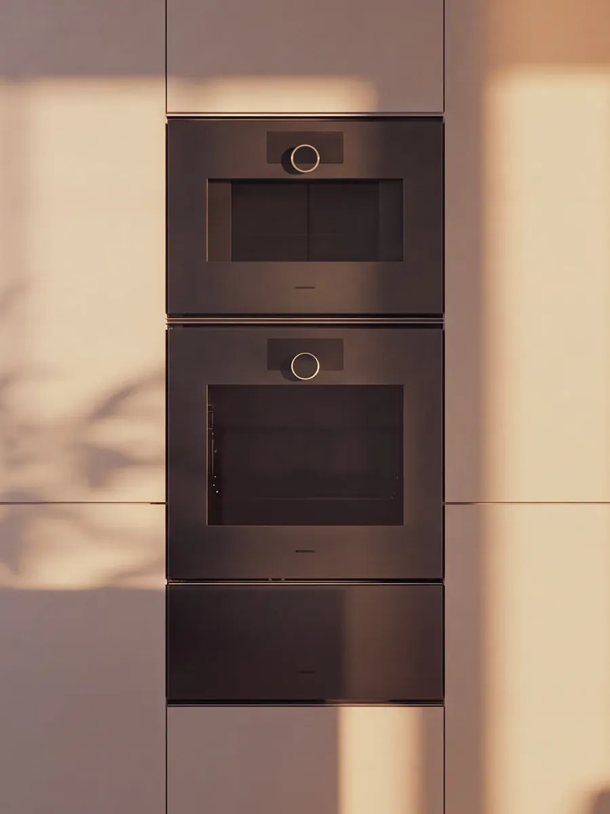
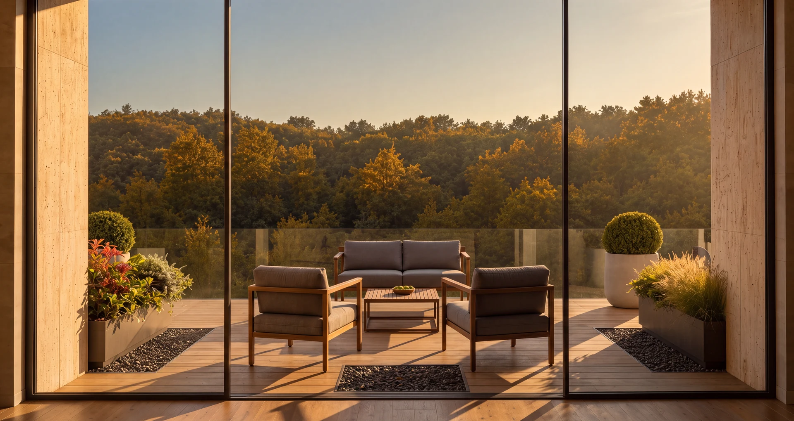
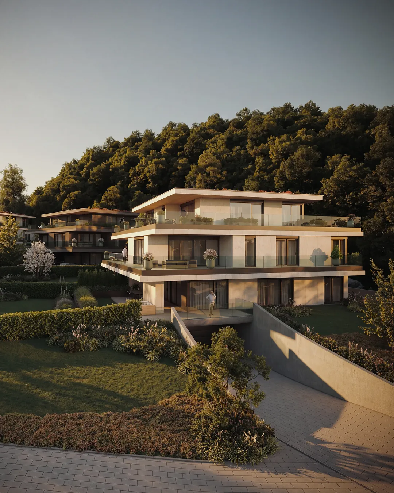
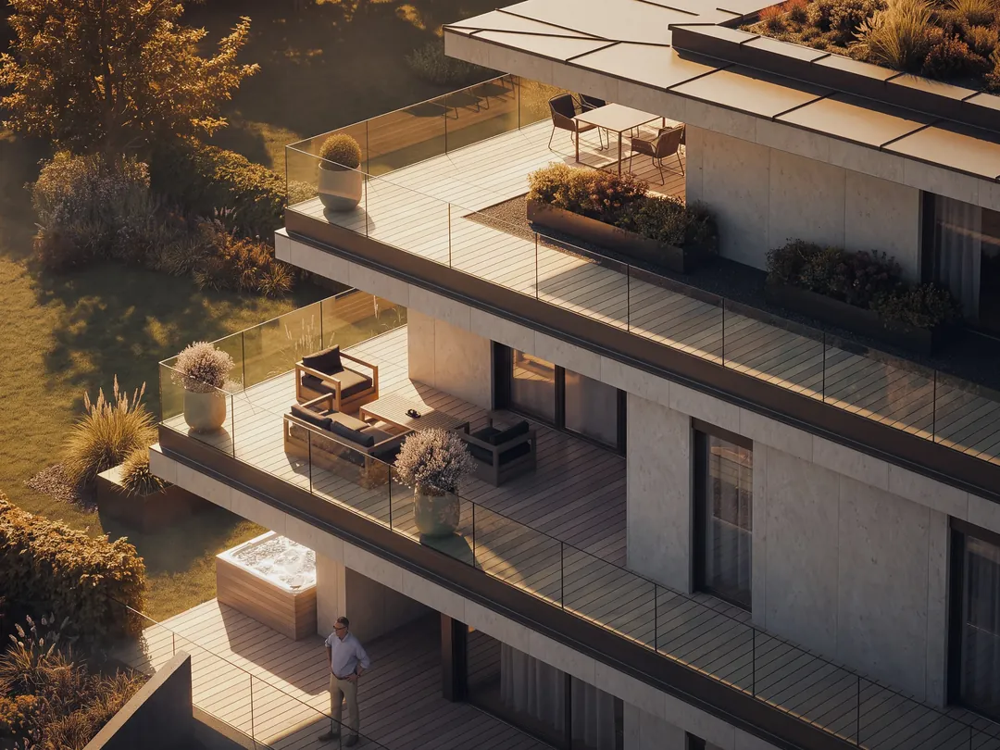
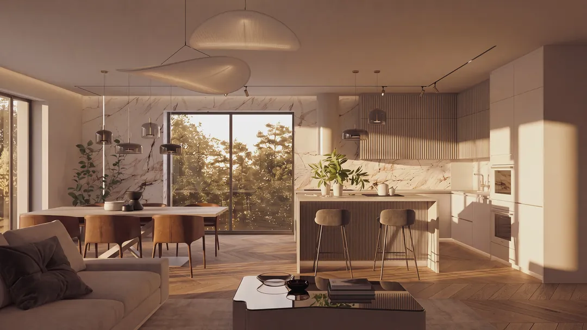
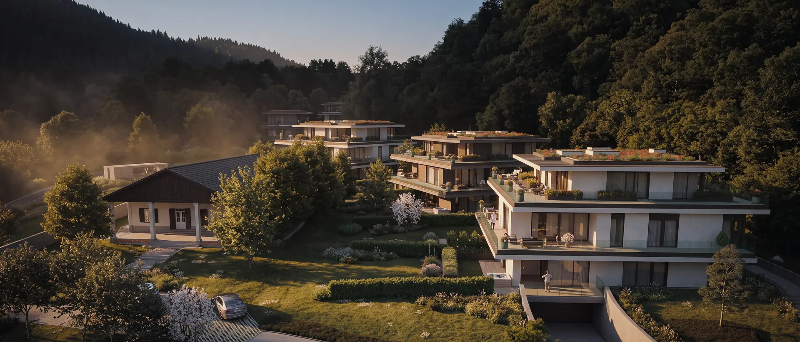
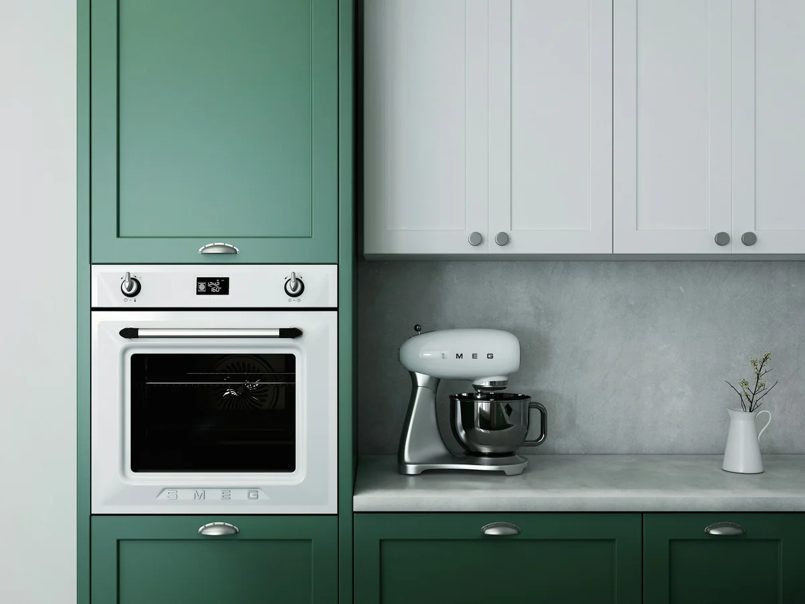

Gaggenau
Teljes Gaggenau-konyha alapfelszereltségként
Minden lakás teljes Gaggenau-készülékcsaláddal készül. Ez a márka első magyarországi high-end lakóprojektje.
Részletek
A múltra építve. A jövőnek tervezve.
A Páfrány Boutique Residences Budapest II. kerületében, a Páfrány úton épül, a védett Apáthy-szikla mellett. Hat kis villa épül egy 1820-as műemlék ház, a budai villanegyed első háza körül. Minden otthonhoz saját kert vagy terasz tartozik.



A villák lépcsőzetesen követik a lejtőt, így minden otthon zöldre nyílik: a földszinten kertkapcsolatos lakások, fölöttük teraszos lakások, legfelül pedig penthouse-ok az Apáthy-sziklára néző tetőterasszal. A telek közepén álló 1820-as vendéglőépület megmarad.


Minden lakás teljes Gaggenau-készülékcsaláddal készül. Ez a márka első magyarországi high-end lakóprojektje.
RészletekKlíma, fény, árnyékolás, biztonság és energia egy rendszerben, robotikára felkészített épületben.
RészletekPasarét és Hűvösvölgy között, egy védett természeti terület szélén, a II. kerületben.
RészletekHumanoid robotszolgáltatás-pilot a lakóknak, egy olyan házban, ahol a robotoknak is van helyük dolgozni.
Részletek
Hogyan vonzotta egy molnár vendéglője a domboldalra az első budai villaépítő családokat.
A projekt története, dátumai és vállalásai egy helyen.

A konyha mint az otthon technológiai központja.
Alaprajzok, elérhetőség és egyéni bemutatás ingatlanközvetítőknek, vevőknek és tanácsadóiknak.
Érdeklődöm